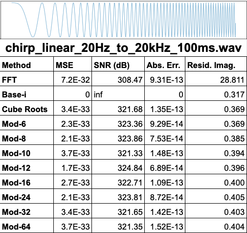
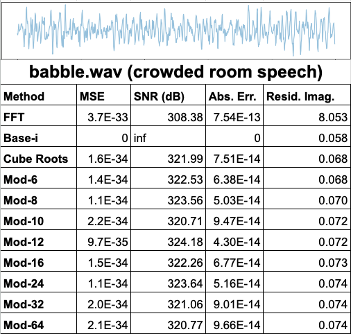

Introduction
Traditional FFT methods introduce residual imaginary components that limit reconstruction fidelity.
Our novel Base-i and Mod-N encoding methods achieve zero-loss reconstruction with unprecedented precision.
Investment Opportunities
austinLacoustic is seeking partners and investors to scale our patented signal processing technology. With applications in audio, defense, AI, and more, we're positioned for rapid growth. Key traction: Pending patent, superior metrics (0 MSE/Abs. Err.), and real-world testing across 20+ waveforms.
Problem: Standard methods like FFT lose fidelity in noisy or real-time scenarios.
Solution: Our Base-i/Mod-N achieves perfect reconstruction, enabling new innovations.
Contact for Pitch Deck
Developer Toolkit
Download our Developer Toolkit to test signal encoding methods across real-world waveforms. This kit includes:
- Python/Colab scripts for testing FFT, Base-i, Cube Root, and Mod-N methods
- Audio samples and validation metrics
- Spreadsheet of over 20 waveform types analyzed
- Documentation and starter guide
August 2025 Release
Note: Use of this kit does not grant commercial rights. Contact austin@austinlacoustic.com for licensing inquiries.
Performance Highlights
Base-i, Mod-12 and Mod-24 encoding methods outperform FFT across every tested waveform, with perfect reconstruction (MSE = 0, Abs. Err. = 0) and zero residual imaginary signal results present.
FFT, in contrast, introduces distortions up to 21.77 in residual imaginary amplitude.
View Full Results Spreadsheet



Real-World Applications
Our technology excels in diverse fields. Here's a selection:
Audio Production
Lossless compression and restoration of analog/digital audio signals without colorization.
Telecom
Enhanced waveform fidelity in data transmission, especially under lossy conditions.
Defense / Submarine Comms
Recover full signal clarity from underwater impulse tests or noise-dominated data.
AI & DSP Research
Build models with pure time-domain accuracy. Ideal for hybrid AI/DSP processing models.
Medical Imaging
Improve clarity and fidelity in MRI, EEG, and ultrasound data by eliminating phase distortion artifacts.
Seismic Analysis
Accurately reconstruct geophysical signals for earthquake modeling and subsurface exploration.
Space Communications
Enable lossless signal decoding in deep-space missions where traditional transforms fail under noise.
Archival & Restoration
Recover historical or degraded audio recordings with mathematically verified fidelity.
Base-i vs Mod-N vs FFT: Technical Comparison
Core Differences
- FFT is a global transform that reveals frequency content but loses time-order and phase continuity.
- Base-i is a per-sample complex encoding that preserves structure, phase, and temporal sequence.
- Mod-N generalizes Base-i using modular arithmetic across cyclic roots, enabling tailored encodings with strong reconstruction performance.
Comparison Table
| Feature |
Base-i |
Mod-N |
FFT |
| Time-order preserved |
✅ Yes |
✅ Yes |
❌ No |
Summary
FFT is powerful for direct frequency decomposition and fast convolution but is limited in temporal resolution, structure retention, and sample-level fidelity.
Base-i and Mod-N preserve exact time-domain geometry, enabling lossless storage, real-time decoding, and signal structure analysis. Mod-N, in particular, allows tuning of the encoding system using modular roots (e.g., Mod-12), offering phase-aware, compact representations with zero reconstruction error under optimal configurations.
Contact
Contact us for licensing, collaboration, evaluation agreements, or to submit results from your tests using the Dev Kit:
austin@austinlacoustic.com
All signal encoding materials, including methods, documentation, and data, are the
intellectual property of Austin Lakata. Use of this site or its downloads does not
grant commercial rights. Redistribution, reproduction, or implementation in commercial
systems without explicit written permission is prohibited.